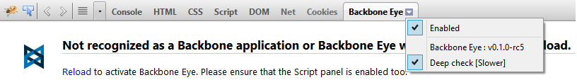

Troubleshooting
Backbone app not detected?
If you are using Backbone.js in any closure (or function) context - like browserify.js environments as an example, please switch on the deep check option. This can slow down the browser, so please do ensure that Backbone Eye is disabled or deep-check option is switched off after the debugging session.
Backbone Eye attempts to discover application structure by intercepting calls to various Backbone methods. In case, your application is not working with Backbone Eye, please check the Eye logs section for errors. Please attach a screen-shot of those errors and the version of Backbone Eye while submitting a bug.

Note Backbone Eye works with Firefox 23+ & Firebug v1.12+
Backbone Eye becoming sluggish?
Turn off 'Deep-check' if it is not required.For complex applications, introspection data can grow and Backbone Eye can become sluggish. Click on the clear button to reset this data.

This will cause both the journal and interaction data collected so far to be wiped out.


It is also possible to not record this data altogether. Toggle the eye button to stop or start recording this data
| Not recording | Recording | |
 |
 |
Tip Leverage this feature in real applications to improve debugger performance. Switch off recording and load the application URL. When you want to watch interesting (or weird perhaps!) application behavior, start recording.